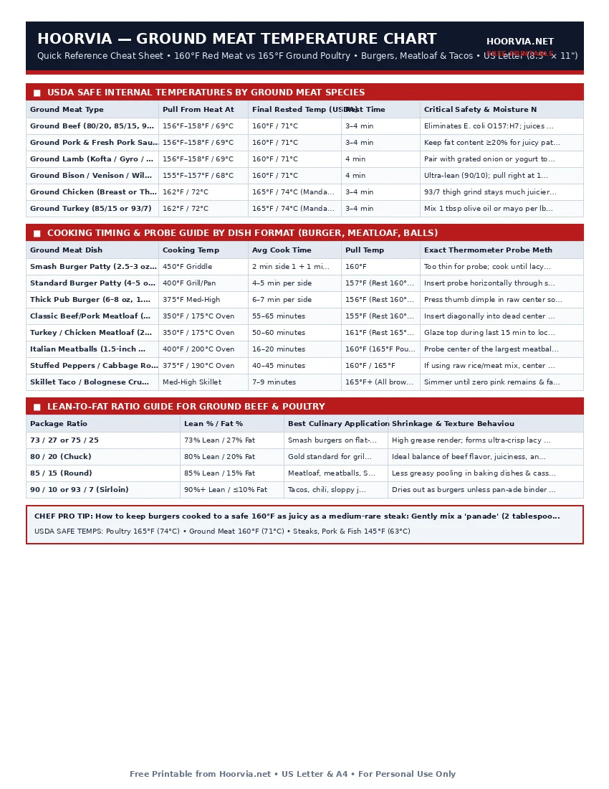

Ground Meat Internal Temperature Chart (Beef, Poultry, Pork & Lamb)
Whole steaks can be eaten rare at 125°F because the interior muscle has never been exposed to air or processing equipment. Once meat passes through a grinder, surface bacteria are distributed throughout the entire batch. That is why ground beef, pork, and lamb require a minimum internal temperature of 160°F (71°C), and ground chicken or turkey requires 165°F (74°C).
| Ground Meat Type | Pull From Heat At | Final Rested Temp (USDA) | Rest Time | Critical Safety & Moisture Note |
|---|---|---|---|---|
| Ground Beef (80/20, 85/15, 90/10) | 156°F–158°F / 69°C | 160°F / 71°C | 3–4 min | Eliminates E. coli O157:H7; juices run clear |
| Ground Pork & Fresh Pork Sausage | 156°F–158°F / 69°C | 160°F / 71°C | 3–4 min | Keep fat content ≥20% for juicy patties |
| Ground Lamb (Kofta / Gyro / Burgers) | 156°F–158°F / 69°C | 160°F / 71°C | 4 min | Pair with grated onion or yogurt to retain moisture |
| Ground Bison / Venison / Wild Game | 155°F–157°F / 68°C | 160°F / 71°C | 4 min | Ultra-lean (90/10); pull right at 157°F so it doesn't dry |
| Ground Chicken (Breast or Thigh Grind) | 162°F / 72°C | 165°F / 74°C (Mandatory) | 3–4 min | 93/7 thigh grind stays much juicier than 99% breast |
| Ground Turkey (85/15 or 93/7) | 162°F / 72°C | 165°F / 74°C (Mandatory) | 3–4 min | Mix 1 tbsp olive oil or mayo per lb to prevent dryness |
| Ground Meat Dish | Cooking Temp | Avg Cook Time | Pull Temp | Exact Thermometer Probe Method |
|---|---|---|---|---|
| Smash Burger Patty (2.5–3 oz, 1/4") | 450°F Griddle | 2 min side 1 + 1 min side 2 | 160°F | Too thin for probe; cook until lacy brown & juices clear |
| Standard Burger Patty (4–5 oz, 3/4") | 400°F Grill/Pan | 4–5 min per side | 157°F (Rest 160°F) | Insert probe horizontally through side edge to center |
| Thick Pub Burger (6–8 oz, 1.25") | 375°F Med-High | 6–7 min per side | 156°F (Rest 160°F) | Press thumb dimple in raw center so patty cooks flat |
| Classic Beef/Pork Meatloaf (2 lb Loaf) | 350°F / 175°C Oven | 55–65 minutes | 155°F (Rest 160°F) | Insert diagonally into dead center of loaf; rest 15 min |
| Turkey / Chicken Meatloaf (2 lb Loaf) | 350°F / 175°C Oven | 50–60 minutes | 161°F (Rest 165°F) | Glaze top during last 15 min to lock in steam |
| Italian Meatballs (1.5-inch diameter) | 400°F / 200°C Oven | 16–20 minutes | 160°F (165°F Poultry) | Probe center of the largest meatball on middle tray |
| Stuffed Peppers / Cabbage Rolls | 375°F / 190°C Oven | 40–45 minutes | 160°F / 165°F | If using raw rice/meat mix, center must hit 160°F+ |
| Skillet Taco / Bolognese Crumbles | Med-High Skillet | 7–9 minutes | 165°F+ (All browned) | Simmer until zero pink remains & fat renders clear |
| Package Ratio | Lean % / Fat % | Best Culinary Application | Shrinkage & Texture Behaviour |
|---|---|---|---|
| 73 / 27 or 75 / 25 | 73% Lean / 27% Fat | Smash burgers on flat-top griddle | High grease render; forms ultra-crisp lacy edges |
| 80 / 20 (Chuck) | 80% Lean / 20% Fat | Gold standard for grilled & pan burgers | Ideal balance of beef flavor, juiciness, and hold |
| 85 / 15 (Round) | 85% Lean / 15% Fat | Meatloaf, meatballs, Shepherd's pie | Less greasy pooling in baking dishes & casseroles |
| 90 / 10 or 93 / 7 (Sirloin) | 90%+ Lean / ≤10% Fat | Tacos, chili, sloppy joes, pasta sauces | Dries out as burgers unless pan-ade binder is added |
Printable Cheat Sheet Preview (US Letter & A4)
High-contrast, ink-saving layout designed for kitchen binders, grill stations, and refrigerator doors. No sign-up required.

Why Color Lies in Ground Meat (And How to Keep 160°F Burgers Juicy)
Many people judge burger doneness by cutting into the middle to see if the meat is brown or pink. According to USDA food scientists, internal color is NOT a reliable indicator of ground meat safety:
- Premature Browning (Looks Brown at 135°F): Ground beef stored in low-oxygen packaging or exposed to air can turn completely brown at just 135°F–140°F—long before reaching the 160°F threshold needed to destroy E. coli.
- Persistent Pink (Looks Pink at 165°F+): Ground beef with a naturally high pH (above 6.0), or burgers cooked on a gas or charcoal grill where nitrogen dioxide and carbon monoxide gases react with myoglobin, can stay bright pink even when cooked past 170°F!
3 Rules for Tender, Never-Tough Burgers & Meatballs
- Salt Only the Outside of Burgers right Before Cooking: Mixing salt directly into raw burger meat dissolves myosin proteins and cross-links the meat into a bouncy, sausage-like hockey puck. Handle the grind as little as possible and season the exterior crust right before hitting the pan.
- Press a 1/4-Inch Dimple in the Center: As burger protein contracts under heat, the edges pinch inward and push the center up into a baseball dome. Pressing a shallow thumb print into the center of raw patties guarantees a flat burger.
- Slide the Probe Through the Side: Always insert your digital thermometer horizontally through the side of a burger patty so the sensor tip sits dead-center.
Frequently Asked Questions
Why does ground turkey require 165°F while ground beef only requires 160°F?
Poultry flocks carry a higher baseline prevalence of Salmonella and Campylobacter strains that have slightly higher thermal resistance than the E. coli strains found in cattle. Reaching 165°F achieves an instant 7-log reduction of poultry pathogens.
Why did my meatloaf fall apart when I sliced it?
Two reasons: (1) You sliced it immediately out of the oven instead of letting it rest for 15 minutes so the proteins and gelatin could set, or (2) You didn't use enough binder (use 1 large egg and 1/2 cup breadcrumbs per pound of meat).
Can I make medium-rare burgers at home safely?
Only if you sear the outside of a whole chuck/sirloin roast in boiling water or a hot skillet first to sterilize the surface, and then grind the meat yourself in a sanitized grinder immediately before cooking, or cook the patties sous-vide at 135°F for 2 full hours to pasteurize by time.
Meat, Poultry & Seafood Temperature Reference Series
- 🥩 Master Meat Internal Temperature Chart (#021)
- 🥩 Steak Doneness Chart: Pull vs Target Temps (#022)
- 🥩 Chicken Temperature Chart: White vs Dark Meat (#023)
- 🥩 Turkey Temperature & Roasting Time Guide (#024)
- 🥩 Pork Internal Temperature Chart: Chops vs BBQ (#025)
- 🥩 Fish & Shellfish Internal Temperature Chart (#027)
Frequently Asked Questions (FAQs)
Why does ground turkey require 165°F while ground beef only requires 160°F?▼
Poultry flocks carry a higher baseline prevalence of Salmonella and Campylobacter strains that have slightly higher thermal resistance than the E. coli strains found in cattle. Reaching 165°F achieves an instant 7-log reduction of poultry pathogens.
Why did my meatloaf fall apart when I sliced it?▼
Two reasons: (1) You sliced it immediately out of the oven instead of letting it rest for 15 minutes so the proteins and gelatin could set, or (2) You didn't use enough binder (use 1 large egg and 1/2 cup breadcrumbs per pound of meat).
Can I make medium-rare burgers at home safely?▼
Only if you sear the outside of a whole chuck/sirloin roast in boiling water or a hot skillet first to sterilize the surface, and then grind the meat yourself in a sanitized grinder immediately before cooking, or cook the patties sous-vide at 135°F for 2 full hours to pasteurize by time.